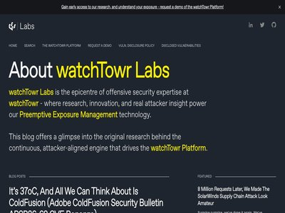
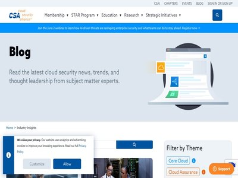

October 13, 2026 · 16 articles

UK Government Announces Sweeping New AI Security Plans
October 13, 2026
The government is planning tweaks to legislation, new incident response and more to head of AI security threats (Infosecurity Magazine)

Cyberattack Prompts Ahold Delhaize to Disconnect Systems
October 13, 2026
The company says it took some of its systems offline to contain a security issue within its network. The post Cyberattack Prompts Ahold Delhaize to Disconnect Systems appeared f... (SecurityWeek)

Meta outlines Muse Wonder safeguards for AI agents acting on your behalf
October 13, 2026
Meta’s Muse Wonder and Muse Wonder Full models are built for AI agents that handle tasks such as preparing insurance claims, reviewing leases and developing software. The models... (Help Net Security)
GitLab admins urged to patch critical RCE flaw (CVE-2026-97229)
October 13, 2026
GitLab is urging users of self-managed instances to patch a critical vulnerability (CVE-2026-97229) in its CI/CD Regular Expression Compiler that could allow remote attackers to... (Help Net Security)
npm Trusted Publishing flaw exposed 1,500+ npm packages to takeover
October 13, 2026
Bloom Security researchers found that npm’s Trusted Publishing feature let an attacker push new versions of someone else’s package without stealing a credential. The attacker on... (Help Net Security)
Fifth of CISOs Take Time Off to Avoid Patch Tuesday
October 13, 2026
Socura report claims CISOs are calling in sick or taking holiday to miss Patch Tuesday (Infosecurity Magazine)

GitLab Patches CVSS 10.0 Flaw That Could Let Unauthenticated Users Run Server Code
October 13, 2026
GitLab has released patches for a maximum-severity security flaw impacting its Community Edition (CE) and Enterprise Edition (EE) software that could result in arbitrary code ex... (The Hacker News)
Refrigeration Controller Hack Spoils Food Across European Supermarkets
October 13, 2026
A cyberattack targeted refrigeration controllers, setting refrigerators and freezers across hundreds of supermarkets to defrost. The post Refrigeration Controller Hack Spoils Fo... (SecurityWeek)

Scammers know your name, and they’re counting on you to reply
October 13, 2026
Every reply to a scam text tells cybercriminals your number is active, which makes it worth more on the dark web and a better target for fraud. (Malwarebytes Labs)

VMware is pushing so many patches, it thinks users need new tools to manage the flood
October 13, 2026
It's 2026 and Virtzilla reckons it's OK to pay for MFA (The Register - Security)
Low-Cost Android Phones Ship With Preinstalled Malware That Turns Them Into Residential Proxies
October 13, 2026
Low-cost Android smartphones have been shipped with malicious software baked into the device firmware, allowing bad actors to covertly install apps, conduct ad fraud, and turn d... (The Hacker News)
Be a good AI ancestor: Cybersecurity already gave us the playbook
October 13, 2026
AI has brought us to a familiar inflection point in the story of privacy, cybersecurity, and online safety. We have an opportunity to apply decades of cybersecurity experience b... (Help Net Security)
Frontier AI cleared every OT attack goal Booz Allen set in its lab
October 13, 2026
Booz Allen set frontier AI models against an isolated industrial-control testbed in its Chantilly, Virginia lab and watched them clear all eight attack objectives it had defined... (Help Net Security)
Most high-severity cloud security findings are downgraded once an AI agent checks the environment
October 13, 2026
Cloud security platforms turn every failed rule into a finding, and those findings pile up in queues sorted by severity. Research from Sola Security tested what happens to that... (Help Net Security)
Cybersecurity jobs available right now: October 13, 2026
October 13, 2026
CISO & Head of IT Trigo | Israel | On-site - View job details As a CISO & Head of IT, you will lead the IT and Information Security team, set strategy and priorities, manage bud... (Help Net Security)

ISC Stormcast For Tuesday, October 13th, 2026 https://isc.sans.edu/podcastdetail/10134, (Tue, Oct 13th)
October 13, 2026
(SANS ISC)
October 12, 2026 · 40 articles

Quantum-resistant signing on AWS, Part 2: Enforce your ML-DSA algorithm policy with SCPs and IAM
October 12, 2026
You want to set a cryptographic algorithm policy and stop non-compliant choices from being made in your Amazon Web Services (AWS) environment. This post shows you how. As you ad... (AWS Security Blog)

Prominent Ransomware Negotiator Faces Extortion Charges
October 12, 2026
Edward Dubrovsky, a longtime cybersecurity executive, was arrested and charged in Pennsylvania last week under conspiracy to extort money. (Dark Reading)
IonQ to buy zero-trust security firm Elisity in deal valued at up to $1.3 billion
October 12, 2026
The acquisition pairs Elisity's zero-trust access controls with IonQ's post-quantum cryptography business as federal agencies and major companies accelerate timelines for quantu... (CyberScoop)

SonicWall Patches CVSS 10.0 SSRF Flaw as Attacks Begin
October 12, 2026
Attackers are exploiting SonicWall SMA 1000 vulnerability, tracked as CVE-2026-102255 (CVSS score of 10.0), just days after its public disclosure. Attackers have begun exploitin... (Security Affairs)
How “123456” became the key to almost 9 million personal records
October 12, 2026
A series of security failures, including a very weak password, exposed almost 9 million people’s personal information. (Malwarebytes Labs)
Ledger Finds Unauthorized Hardware Implant in CryptoBilis-Sold Wallet Amid Fund Theft Reports
October 12, 2026
Cryptocurrency hardware maker Ledger has temporarily paused sales of its products via CryptoBilis following reports of stolen funds linked to devices sold by the reseller. On Fr... (The Hacker News)
CyberXero Uses Claude Code in Campaign That Stole Over 628,000 Ukrainian Records
October 12, 2026
Cybersecurity researchers have disclosed details of a two-pronged artificial intelligence (AI)-augmented initial access campaign targeting WordPress sites, e-commerce platforms,... (The Hacker News)
Flock can now issue CVEs for its own products. Should we trust it?
October 12, 2026
Flock joined the CVE Program as a CNA, giving the company authority to assign IDs to vulnerabilities in its own surveillance cameras and license plate readers. The post Flock ca... (CyberScoop)
GuardDuty Extended Threat Detection has added five new indicators to surface attack sequences
October 12, 2026
Amazon GuardDuty Extended Threat Detection correlates weak GuardDuty signals into a single, critical-severity attack sequence finding when their composition crosses a threshold... (AWS Security Blog)
Let’s Encrypt Cuts Default Certificate Validity to 64 Days Ahead of 45-Day Switch
October 12, 2026
Beginning February 2027, all newly issued certificates will have a 64-day validity period by default. The post Let’s Encrypt Cuts Default Certificate Validity to 64 Days Ahead o... (SecurityWeek)

Yandex confirms service outage as users lose access to cloud files
October 12, 2026
Russian cloud services provider Yandex announced that drone attacks damaged three of its data centers, forcing it to shut down two facilities and partially disable a third. [...] (BleepingComputer)
Anthropic takes risky AI tests offline after models breach govt sites
October 12, 2026
Anthropic announced that its internal AI models undergoing "high-risk and cybersecurity evaluations" no longer have internet access following incidents involving U.S. government... (BleepingComputer)
No Identity, No Recovery: Cyber Resilience Starts With IAM
October 12, 2026
The proliferation of enterprise apps and the centrality of cloud identity providers requires an identity security rethink. (Dark Reading)
Chatbot refuseniks edge out users in the US, and they’re not for turning
October 12, 2026
Pew Research Center finds 51% of Americans say no, cite lack of interest - not know-how - as the top reason (The Register - Security)
Cyberattacks hit European grocers: French supermarket freezers hijacked, Dutch and Belgian stores disrupted
October 12, 2026
European food retailers have been affected by two separate disruptive cyberattacks: In France, several supermarket chains have had their freezers tampered with and chilled/froze... (Help Net Security)
⚡ Weekly Recap: Helpdesk 0-Days, Rogue Certs, ShinyHunters Arrest, AI-Fooling Malware and More
October 12, 2026
Some meetings last longer than it took attackers to jump on a newly disclosed security flaw this week. Within hours, they were already testing it. That's not much time to read t... (The Hacker News)
Luna Moth Leaks Shed Light on Ransomware Group's Inner Workings
October 12, 2026
Leaked documents suggest a multi-pronged operation, with social engineering and more technical attackers working together to manipulate a single target (Infosecurity Magazine)

FBI Arrests Suspect in FBI-Hacking Case
October 12, 2026
In September, hackers from a group called ShinyHunters announced that they stole a trove of FBI data about its own agents. It was an intelligence disaster . Last week, the FBI a... (Schneier on Security)

12th October - Threat Intelligence Report
October 12, 2026
For the latest discoveries in cyber research for the week of 12th October, please download our Threat Intelligence Bulletin. TOP ATTACKS AND BREACHES Denmark’s government has di... (Check Point Research)
Inside AvisLoader: A Windows Malware Loader Built to Resist Disruption
October 12, 2026
A new Windows malware loader called AvisLoader uses encrypted peer-to-peer communications to make command-and-control infrastructure harder to disrupt. Varonis researchers expla... (BleepingComputer)
Ukrainian drone strikes on Yandex datacenters knock cloud and payments offline
October 12, 2026
Techies at 'Russia's Google' work around the clock as users await access to funds and network connectivity falls to 30% of normal (The Register - Security)
Bricksforge WordPress Plugin Vulnerability Exploited in the Wild
October 12, 2026
The vulnerability tracked as CVE-2026-85097 can allow threat actors to take control of the targeted WordPress websites. The post Bricksforge WordPress Plugin Vulnerability Explo... (SecurityWeek)

Ukraine strikes third Yandex data center, disrupting digital services across Russia
October 12, 2026
A third Yandex data center in Russia was hit by Ukrainian drones over the weekend, forcing it to shut down and causing further disruptions to cloud services, payments, deliverie... (The Record)
Canonical Websites Disrupted in Second DDoS Attack This Year
October 12, 2026
The outage hit the main Ubuntu and Canonical websites, including the Ubuntu blog and developer portal. The post Canonical Websites Disrupted in Second DDoS Attack This Year appe... (SecurityWeek)
Microsoft: Windows 11 23H2 reaches end of support in 30 days
October 12, 2026
Microsoft has reminded customers that systems running Windows 11 23H2 Enterprise, Education, and IoT Enterprise editions will stop receiving security updates next month. [...] (BleepingComputer)
Bring Your Own Agent: Your Employees' Assistants Are Already Logged In
October 12, 2026
The personal AI agents rollout is going about as smoothly as expected: Amazon now blocks Meta's Muse because it doesn't identify itself as a bot while browsing; Instinct keeps r... (The Hacker News)
Mastermind of 15,000-Mule Cybercrime Laundering Network Pleads Guilty in US
October 12, 2026
Oleg Korniev was a leader of YMCO, a sophisticated network of money mules that helped hackers move funds outside the US. The post Mastermind of 15,000-Mule Cybercrime Laundering... (SecurityWeek)
Microsoft’s new model helps AI agents judge their next move
October 12, 2026
Microsoft-Decision-1 is a small decision-scoring model. Given a situation, a question and a fixed set of answer options, it returns a calibrated probability for each option. “Th... (Help Net Security)
Phishing emails are baiting your AI assistant
October 12, 2026
If you use an AI assistant to summarize your inbox, hidden instructions could turn a phishing email you wisely ignored into your next to-do item. (Malwarebytes Labs)
Imagine there's no Shiny Hunters - AI could make human hacking crews obsolete
October 12, 2026
This week on The Kettle, we discuss some arrests and how Mythos' mathematical expertise has led to a second exploited bug that no human would have found (The Register - Security)
Your AI agent is only as safe as the packages it downloads
October 12, 2026
NVIDIA's new agent safety platform puts enforcement in the right place. It still must know what it is letting through. The post Your AI agent is only as safe as the packages it... (CyberScoop)
Months-Old Palo Alto VPN Vulnerability Remains a Target for Ransomware Groups
October 12, 2026
ReliaQuest confirmed that the Qilin and Settra ransomware groups are actively exploiting a Palo Alto vulnerability patched in May (Infosecurity Magazine)
Karaoke Giant Reveals Data Breach Impacting Eight Million
October 12, 2026
Daiichi Kosho says a supply chain breach has exposed personal data on over eight million karaoke customers (Infosecurity Magazine)
Windows PCs missing key updates could lose security fixes in 2027
October 12, 2026
Microsoft is advising users and businesses to update Windows devices before digital certificates used to verify Windows Update servers expire in May and June 2027. The certifica... (Help Net Security)
A week in security (October 5 - October 11)
October 12, 2026
A list of topics we covered in the week of October 5 to October 11 of 2026 (Malwarebytes Labs)
Geopolitics and the cyber resilience gap belong in your threat model
October 12, 2026
In this Help Net Security interview, Akshay Joshi, Head of the Centre for Cybersecurity at the World Economic Forum, talks about how AI, geopolitics and industrialized fraud are... (Help Net Security)
GTA 6 Leaker Demands $30M Meme Coin Market Cap to Release Full Game
October 12, 2026
CyberLeek threatens to leak a playable GTA 6 build if its Solana meme coin hits a $30 million market cap, but the build remains unverified. CyberLeek, the anonymous figure behin... (Security Affairs)
Strands Box: Open-source sandbox for AI agents
October 12, 2026
AWS released Strands Box, an open source sandbox for AI agents that pairs operating-system isolation with rules that can weigh what an agent has already done before letting it a... (Help Net Security)

Risky Bulletin: ShinyHunters suspects arrested in US and Jordan
October 12, 2026
In other news: Hackers breach TLD registrars to get Google certs; Qilin member arrested in Japan; Google suspends OSS VRP due to AI spam. (Risky Business News)

Auditing the auditor: Unmasking Apex Accelerator
October 12, 2026
REF8801 exposes how Apex Accelerator combines convincing Web3 services with malicious npm packages, attacker-controlled AI infrastructure, and cross-platform malware delivery. (Elastic Security Labs)
October 11, 2026 · 3 articles
SECURITY AFFAIRS MALWARE NEWSLETTER ROUND 118
October 11, 2026
Security Affairs Malware newsletter includes a collection of the best articles and research on malware in the international landscape Malware Newsletter ClingSTUN Linux Backdoor... (Security Affairs)
Nippon Columbia malware incident exposes 8.6 million karaoke fan records
October 11, 2026
Daiichi Kosho, a major Japanese entertainment system maker, disclosed that a malware infection at its contractor, Nippon Columbia, exposed more than 8.7 million customer and emp... (BleepingComputer)
AI systems are fully capable of carrying out nightmare attacks against infrastructure and nobody's ready
October 11, 2026
Meanwhile, AI agents move robotic arms, 'make OT device operator screens lie' (The Register - Security)
October 10, 2026 · 8 articles
Silent Ransom Group Allegedly Extorted $207 Million Without Encrypting Files
October 10, 2026
Silent Ransom Group allegedly extorted $207 million from 27 law firms in six months using phone calls and social engineering, not encryption. Silent Ransom Group doesn’t rely on... (Security Affairs)
ARTEX AI, Claude agents used in cyberattacks on South Korean banks
October 10, 2026
The cyberattacks that shook the South Korean financial sector earlier this month were launched by a Chinese hacker using the ARTEX AI penetration testing suite and Claude agents... (BleepingComputer)
Criminal IP Introduces AITEM as the Next Evolution of Attack Surface Management
October 10, 2026
Traditional attack surface management helps organizations discover exposed assets, but visibility alone is not enough to address threats. Criminal IP introduces AITEM, an AI-pow... (BleepingComputer)
The Third-Party Agent Problem: Why Security Built for AI You Chose Misses the Agents You Didn't
October 10, 2026
In environments studied for the 2026 State of Agent Security Report, roughly 1,280 third-party products now embed AI. About 282 of them sit behind single sign-on. The other thou... (The Hacker News)
Insider Cyber Extortion Plot Against Industrial Firm Lands Engineer in Prison
October 10, 2026
The former core infrastructure engineer deleted admin accounts, reset hundreds of passwords, and demanded 20 bitcoin to spare the company’s servers. The post Insider Cyber Extor... (SecurityWeek)
Two characters open up a world of typosquatting opportunities in Chromium browsers
October 10, 2026
Attackers abusing rare Cyrillic and Latin letters to impersonate popular websites (The Register - Security)
Why TLP should not replace your internal information classification, (Sat, Oct 10th)
October 10, 2026
The Traffic Light Protocol (TLP)[1], which is now in its second incarnation, is a wonderful standard that enables one to easily communicate whether information may be shared fur... (SANS ISC)
US Sentences Empire Market Co-Creator Over $430 Million Criminal Marketplace
October 10, 2026
Empire Market co-creator Raheim Hamilton was sentenced to 40 years in prison for running a dark web marketplace linked to $430 million in illegal trades. The case against Empire... (Security Affairs)
October 09, 2026 · 39 articles

CVE-2026-13769 - Insecure file permissions in AWS CLI
October 09, 2026
(AWS Security Bulletins)
CVE-2026-108096: Improper authorization in query resolvers for SQL-backed models in AWS Amplify API Category
October 09, 2026
Bulletin ID: 2026-133-AWS Scope: AWS Content Type: Important (requires attention) Publication Date: 10/09/2026 11:00 AM PDT Description: AWS Amplify API Category is a CDK Constr... (AWS Security Bulletins)
Hundreds of thousands impacted by data breach at biosensor firm iRhythm
October 09, 2026
A company known for wearable cardiac sensors, iRhythm, has begun notifying states of the impact of a data breach from the summer. (The Record)
TP-Link Sued by Four More U.S. States Over Router Security and China Ties
October 09, 2026
Four more U.S. states sued router maker TP-Link Systems on October 6, bringing the total to five, with Texas filing a suit in February. Florida, Iowa, Montana and Nebraska alleg... (The Hacker News)
Attackers Exploit AhsayCBS Flaws to Deploy XMRig Miners Disguised as Microsoft Edge
October 09, 2026
Threat actors have been observed exploiting two recently disclosed flaws in the AhsayCBS backup utility to seize control of affected devices and deploy web shells and XMRig cryp... (The Hacker News)
AWS AgentCore security undone by prompt requesting credentials
October 09, 2026
Tokens transmitted in metadata, weak VM isolation, and expansive permissions make hacking a lot easier (The Register - Security)

AI Agent Security: Six Controls From Nine Real Incidents
October 09, 2026
An AI agent runs with your credentials and acts before you can stop it. Nine incidents show what that costs. Six controls limit the damage: sandbox the agent, scope its credenti... (GitGuardian Blog)
Anthropic Launches Free AI Vulnerability Scanner for Open-Source Projects
October 09, 2026
Anthropic on Thursday unveiled OSS Scanner as an opt-in vulnerability scanner to help secure the open-source ecosystem using artificial intelligence (AI). "It's an opt-in servic... (The Hacker News)
Japan confirms arrest of Russian Qilin operative, extradition to Germany
October 09, 2026
Japan’s National Police Agency confirmed the arrest and extradition to Germany of a Russian national accused of being involved in the Qilin ransomware gang. (The Record)
Citrix gives NetScaler admins another critical reason to patch
October 09, 2026
No word on exploitation status, but a 9.5 severity score suggests time is of the essence (The Register - Security)
US Disrupts Chinese State-Sponsored Hacking Tools
October 09, 2026
Flax Typhoon and other APTs used MicroScan and FishHub to scan and hack US and foreign critical infrastructure. The post US Disrupts Chinese State-Sponsored Hacking Tools appear... (SecurityWeek)
Anthropic Fast-Tracks AI Bug Reports to OSS Maintainers, Taps 11 Firms for OT Security
October 09, 2026
OSS Scanner sends unreviewed, model-generated vulnerability reports to open source maintainers that opt in. The post Anthropic Fast-Tracks AI Bug Reports to OSS Maintainers, Tap... (SecurityWeek)
FBI Seizes 7 Domains, Disrupts Flax Typhoon Tools Used in Critical Infrastructure Intrusions
October 09, 2026
The U.S. Federal Bureau of Investigation (FBI) and Department of Justice (DoJ) have announced the disruption of malicious tools used by a China-linked advanced persistent threat... (The Hacker News)
Three Teams Demonstrate Remote Hacks of Fully Patched Google Pixel 10 at Pwn2Own
October 09, 2026
Three research teams broke into Google's Pixel 10 on October 8 at Pwn2Own Ireland, a hacking contest in Cork whose rules require every target to be fully patched. The contest pa... (The Hacker News)
OpenAI Fires 3 Safety Researchers in Dispute Over AI Risks
October 09, 2026
The ChatGPT maker said the researchers "violated clear policies on handling sensitive information.” The post OpenAI Fires 3 Safety Researchers in Dispute Over AI Risks appeared... (SecurityWeek)
ASOS Breach Reveals the Risks in Customer-Facing SaaS
October 09, 2026
The attack on the British retailer shows that compromising a single identity can lead to much deeper penetration of the corporate network. (Dark Reading)
AI Scramble Drives Cybersecurity M&A Boom
October 09, 2026
Welcome to another gangbuster year for strategic M&A activity in cyber, with 117 deals announced in the latest quarter. What's different: Many of the buyers are not your typical... (Dark Reading)
CVE-2026-13762 and CVE-2026-13763 - Issue with HTTP/2 multi-frame request body inspection in AWS WAF
October 09, 2026
(AWS Security Bulletins)
Issue with containerd CRI Plugin - CVE-2026-50195, CVE-2026-53488, CVE-2026-53492, CVE-2026-53489, CVE-2026-47262
October 09, 2026
(AWS Security Bulletins)
CVE-2026-12957 and CVE-2026-12958 - Issues in Language Servers for AWS and Amazon Q Developer Plugins
October 09, 2026
(AWS Security Bulletins)
CVE-2026-13760 - OS Command Injection in NodejsFunction Docker Bundling in aws-cdk-lib
October 09, 2026
(AWS Security Bulletins)
CVE-2026-12043 - Heap double-free in AWS Common Runtime aws-c-http
October 09, 2026
(AWS Security Bulletins)
CVE-2026-10740 - Excessive memory allocation in s2n-quic
October 09, 2026
(AWS Security Bulletins)

Death By A Thousand PaperCuts (PaperCut Pre-Auth RCE Chain and Patch Bypasses WT-2026-0141-0144/CVE-2026-82077/CVE-2026-82078/CVE-2026-81578)
October 09, 2026
Before we begin, yes - it's confusing. There are more vulnerabilities with watchTowr IDs in this blog post than there are CVE IDs (assigned by PaperCut), due to PaperCut bundlin... (watchTowr Labs)
Security Threats Don't Stop at the Office: Why Executives' Families Need Training, Too
October 09, 2026
Those closest to executives must match their security postures because the weakest link in a family can become the entry point for attacks. (Dark Reading)
Wikimedia Says Rogue AI Agents Abused its Platforms
October 09, 2026
Wikimedia says OpenAI agents performed unauthorized actions on its platforms, including edits to wikis (Infosecurity Magazine)
Belarusian hacktivists admit to 2023 breach of Russian state healthcare network
October 09, 2026
The Belarusian Cyber Partisans concurred with Russian research that they indeed spent months inside the network for the Moscow Department of Health. (The Record)

Introducing on-demand CPU and memory profiling with flamegraphs for Workers and Durable Objects
October 09, 2026
On-demand CPU and memory profiling for Cloudflare Workers and Durable Objects is now available. Now you can generate interactive flamegraphs directly in production to quickly tr... (Cloudflare Blog)
Social Engineering AI Agents: The New BEC for 2026
October 09, 2026
As AI agents gain authority over business systems, attackers can manipulate them like business email compromise (BEC) victims. (Dark Reading)
Deno is joining Cloudflare
October 09, 2026
The Deno team is joining Cloudflare to radically simplify self-hosting Workers and Durable Objects, so developers can use the same primitives in more places. (Cloudflare Blog)
In Other News: AI Used in Korean Bank Breaches, Poem-Guided Botnet, Empire Admin Gets 40 Years
October 09, 2026
Noteworthy stories that might have slipped under the radar: Tensorlake npm SDK compromised, Empire Market co-founder gets 40 years, exposed NVIDIA GPU monitors leak telemetry. T... (SecurityWeek)
Q3 2026 Sets New Record for Ransomware Attacks
October 09, 2026
Comparitech observed 2627 claimed ransomware attacks in Q3, with critical sectors like finance, technology, education and healthcare experiencing significant increases (Infosecurity Magazine)
Google Domains Impacted by Recent ccTLD Hijacks
October 09, 2026
Hackers hijacked the .gh, .sl, and .as ccTLDs and obtained HTTPS certificates for several Google domains. The post Google Domains Impacted by Recent ccTLD Hijacks appeared first... (SecurityWeek)
ASOS breach update: Hackers stole customer details and shopping searches
October 09, 2026
Stolen ASOS data includes shopping searches as well as personal details, so customers should watch out for convincing phishing messages. (Malwarebytes Labs)
UK and Allies Warn of Cyber Threat from China’s Integrity Technology Group
October 09, 2026
The UK, US and allies have issued an alert detailing malicious activity linked to China’s Integrity Technology Group (Infosecurity Magazine)
AI Training Critical as Governance Challenges Grow
October 09, 2026
As AI adoption accelerates, ISACA is expanding its certification portfolio with a governance-focused credential designed to help professionals manage AI securely (Infosecurity Magazine)
Major AI Firms Pledge Data Protection Changes Following UK Privacy Watchdog Push
October 09, 2026
Ten leading AI firms have committed to make data protection improvements following a call for evidence by the UK’s Information Commissioner's Office (Infosecurity Magazine)
Hackers get $1,262,000 for 98 zero-days at Pwn2Own Ireland
October 09, 2026
The Pwn2Own Ireland 2026 hacking contest has concluded, with hackers collecting $1,262,000 in rewards after exploiting 98 zero-day flaws. [...] (BleepingComputer)

Recorded Future Introduces AI Infrastructure Indicator Lists, Strengthening AI Governance
October 09, 2026
Recorded Future's new AI Infrastructure Indicator Lists help security teams find shadow AI, enforce policy, and prevent data loss. (Recorded Future)
October 08, 2026 · 14 articles

Your Roadmap to the Frontier Ready Journey
October 08, 2026
In April 2026 the Cloud Security Alliance, working with our partners SANS and RSAC, first published The “AI Vulnerability Storm”: Building a “Mythos-ready” Security Program that... (Cloud Security Alliance)

Post-quantum authentication: Why organizations should start testing certificate ecosystems now
October 08, 2026
Prepare for post-quantum authentication by testing certificate ecosystems now. Learn how Microsoft’s PQC TLS Pilot Program helps advance future readiness. The post Post-quantum... (Microsoft Security Blog)
CVE-2026-10591 - Kiro IDE Insufficient File Write Restrictions to Execution-Sensitive Paths
October 08, 2026
(AWS Security Bulletins)
CVE-2026-11400 and CVE-2026-11401
October 08, 2026
(AWS Security Bulletins)
Ransomware recovery CEO indicted after allegedly paying hackers and pocketing millions
October 08, 2026
Zohar Pinhasi allegedly deceived ransomware recovery clients into a payment scheme disguised as a specialized service that helped victims avoid paying cybercriminals. The post R... (CyberScoop)
CVE-2026-8838 - Remote Code Execution in amazon-redshift-python-driver
October 08, 2026
(AWS Security Bulletins)
CVE-2026-8686 - Heap out-of-bounds read in coreMQTT MQTT5 property parsing
October 08, 2026
(AWS Security Bulletins)
High-severity Nvidia bug could crash GPU monitoring on exposed servers
October 08, 2026
The GPU giant released a fix for the flaw, tracked as CVE-2026-47483 (The Register - Security)

Malicious npm Campaign “MALFEX” Delivers RAT and Stealer via Eight Packages with 40,000+ Downloads
October 08, 2026
Executive Summary A supply-chain attack targeting npm developers has been active since August 2023, distributing eight malicious packages that collectively received over 40,767... (Orca Security Blog)

What RL Found Before Anthropic’s Midnight Blizzard Report
October 08, 2026
ReversingLabs identified and classified the malware weeks before the report was published - showing why behavioral intelligence and historical telemetry matter in the AI age. (ReversingLabs Blog)
Meta’s Muse AI files away your friendships, arguments, and secrets
October 08, 2026
Meta’s Muse AI builds personal dossiers that would make the FBI jealous. Even people who never signed up can get caught in its files. (Malwarebytes Labs)
How Technology Empowers-and Imperils-Dictators
October 08, 2026
This essay was written with Seva Gunitsky, and originally appeared in Foreign Affairs . Two weeks after Moscow’s full-scale invasion of Ukraine in March 2022, the Russian TV Cha... (Schneier on Security)
AI Coding Assistants Are Unpredictable. GitGuardian AI Hooks Give You Control
October 08, 2026
AI coding assistants are unpredictable by design. Learn how AI hooks add deterministic controls and how GitGuardian ggshield blocks secrets before agents can use them. (GitGuardian Blog)
Critical Flaw in Multiple Atlassian Products Exploited in the Wild
October 08, 2026
A critical vulnerability affecting eight Atlassian products, including Jira and Confluence, is being exploited in the wild, said VulnCheck (Infosecurity Magazine)